Das ganze Haus planen. Alles darin finden.
Zeichne dein Haus in 2D und 3D – jedes Fach jedes Möbels wird automatisch ein Lagerplatz. Einbuchen per Klick, QR-Scan oder Sprache, und „Wo liegt …?“ zeigt dir die Schublade.
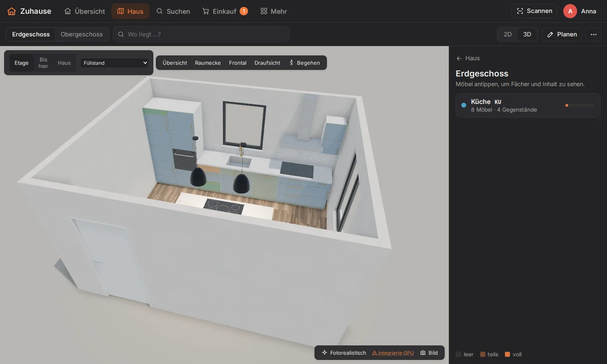
Vom Grundriss zur Schublade
Zuhause verbindet einen Hausplaner mit einer Lagerverwaltung. Der Plan ist das Lager.
KU-C2 = Küche · Möbel C · Fach 2
Das Lager lebt im Plan
Kein Abtippen von Regalnummern: Möbel antippen zeigt die Fächer, ein Fach zeigt seinen Inhalt – direkt neben dem Grundriss.
- Einbuchen, entnehmen, umlagern, rückgängig
- Haltbarkeit mit Schnellwahl und Warnung
- Zieht ein Möbel um, wandert der Inhalt mit
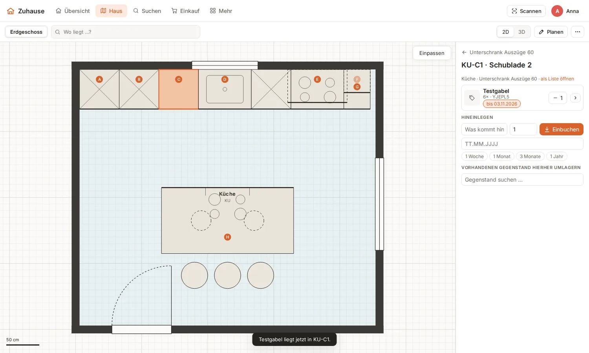
Wo liegt …?
Eine Suche über alle Räume und Lager. Die Treffer leuchten im Grundriss und in 3D auf, Etagen mit Treffern bekommen einen Punkt.
- Suche nach Name, Code, Fach oder Kategorie
- Heatmap: was wird oft bewegt, was liegt nur herum?
- Färbung nach Füllstand und Haltbarkeit
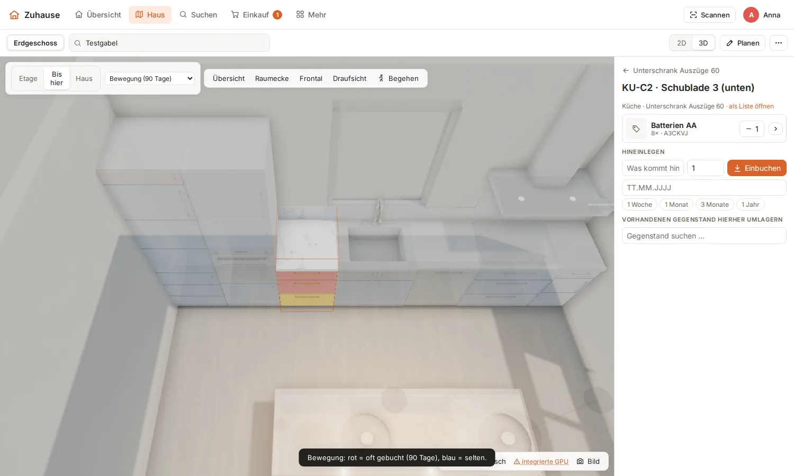
Ein echter Hausplaner
Hervorgegangen aus einem Küchenplaner: Wände mit Fang und Maßen, prozedurale Schrankmodelle, PBR-Materialien und fotorealistisches Pathtracing.
- Keller bis Dachgeschoss, Außenbereich, Treppen
- 3D-Möbel von Poly Haven und FurniMesh, eigene .glb
- Begehen wie im Spiel – auch die Treppe hinauf
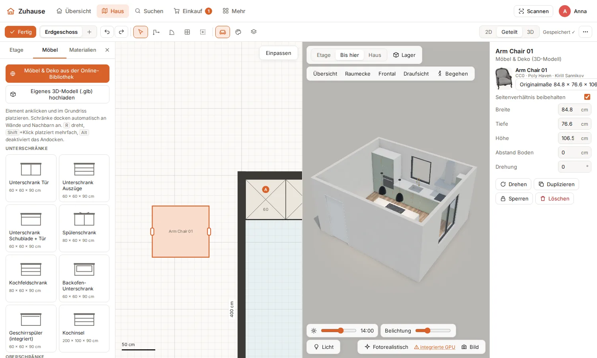
Am Handy
Als App installierbar, mit derselben Navigation wie am PC – am Handy unten, Scannen in der Mitte. Die Übersicht zeigt, was heute zählt.
- Übersicht: Schnellaktionen, Einkaufsliste zum Abhaken, was bald abläuft, Füllstand je Etage, zuletzt bewegt
- Fächer öffnen sich als Blatt von unten, der Plan bleibt sichtbar
- Schlechtes WLAN: Buchungen werden vorgemerkt und automatisch nachgebucht – nie doppelt
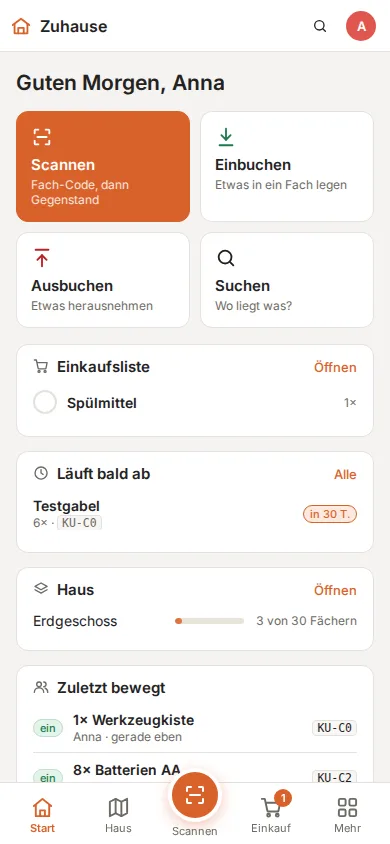
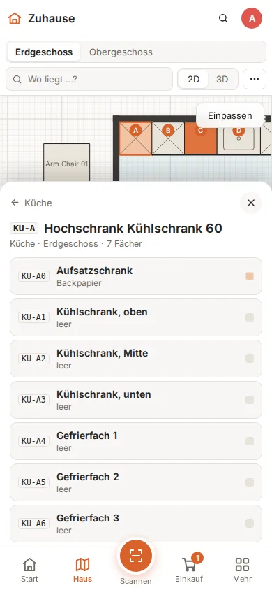
Wandterminal
Ein altes Tablet an der Wand wird zur Schaltzentrale für alle im Haus – ohne persönliche Anmeldung, mit großen Touch-Flächen und einem Ruhezustand, der das Haus wie draußen zeigt.
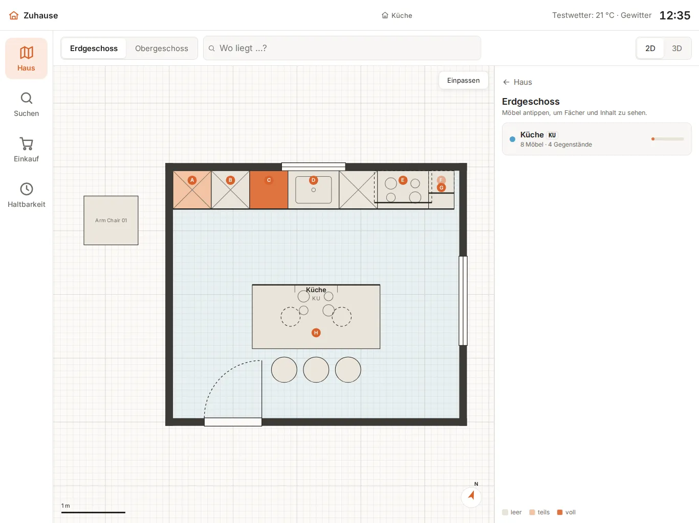
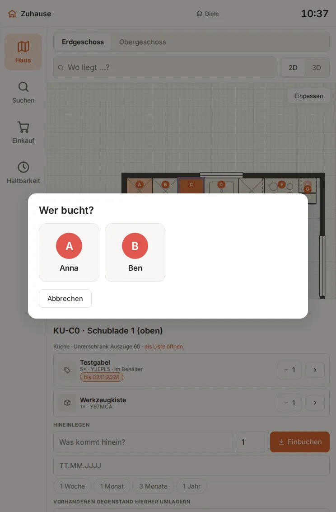
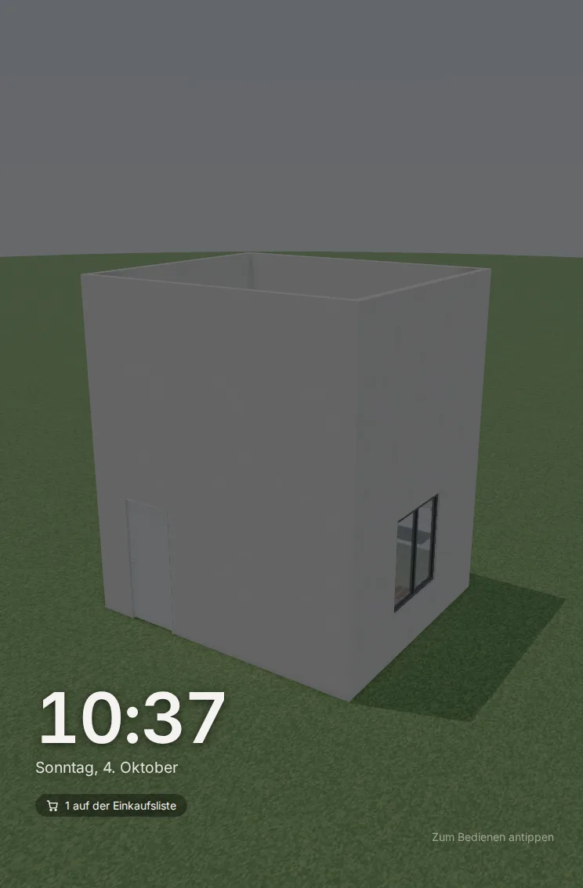
Einrichten in einer Minute
- Verwaltung → Wandterminals → anlegen und nach dem Ort benennen („Diele“)
- Den Einrichtungslink oder seinen QR-Code am Tablet öffnen – fertig, kein Passwort am Gerät
- Je Gerät: Hoch- oder Querformat, Haus als Grundriss oder 3D, hell/dunkel, Schriftgröße bis „sehr groß“
- Wartezeit bis zurück zum Haus, Ruhezustand an/aus, Detailgrad (Entwurf 15 s, Normal 30 s, Hoch 90 s) und Postleitzahl fürs Wetter
- Nur die passenden Seiten: Haus, Suchen, Einkauf, Haltbarkeit – Planen ist am Terminal gesperrt; Link jederzeit neu erzeugen oder Terminal entfernen
Buchen für alle
- Fach antippen, Inhalt sehen, einbuchen oder − 1 entnehmen
- „Wer bucht?“-Kacheln mit allen Personen – der Verlauf zeigt, wer was genommen hat
- Die gewählte Person bleibt 90 Sekunden gemerkt, für mehrere Buchungen hintereinander
- Große Touch-Flächen, Suche „Wo liegt …?“ mit Treffern im Haus
- Ohne Bedienung springt das Terminal zurück zum Haus
Ruhezustand
- Das Haus gedimmt und fotorealistisch, mit flachem Blickwinkel und Rasen drumherum
- Große Uhr, Datum, Wetter, Einkaufsliste und was bald abläuft
- Sonne, Himmel und Wetter wie draußen – siehe Live-Wetter
- Sparsam: rechnet nur neu, wenn sich Sonne oder Wetter ändern; Pause bei verdecktem Bildschirm, letztes Bild gemerkt
- Antippen weckt das Terminal sofort
Live-Wetter am Haus
Trag die Lage deines Hauses ein – dann stehen am Wandterminal Sonne, Himmel und Wetter so, wie du es durchs Fenster siehst. Ohne Konto und ohne API-Schlüssel.
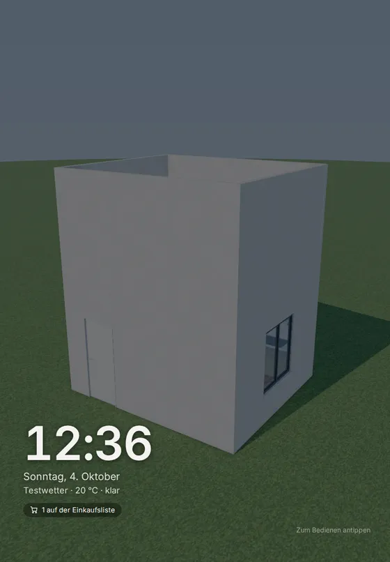
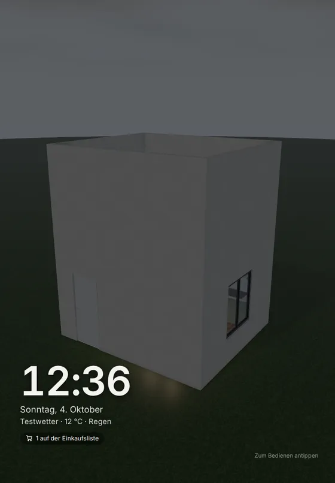
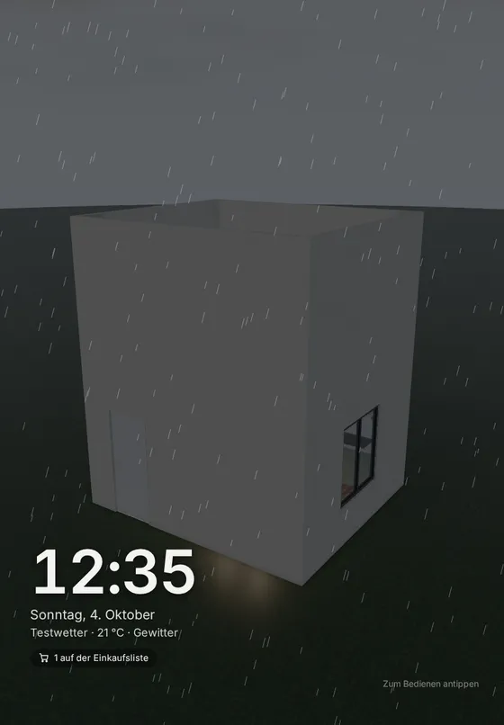
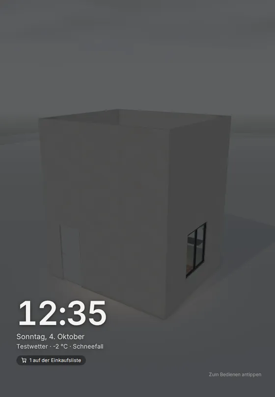
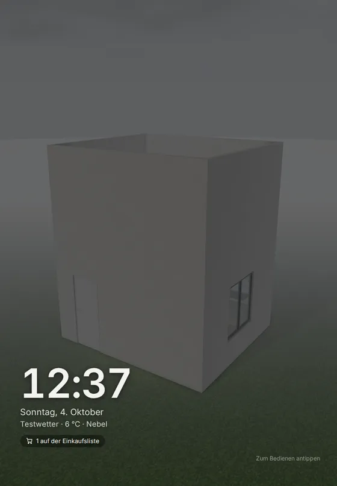
Sonne und Himmel
- Lage des Hauses (Planen → ⋯): Adresse oder Postleitzahl suchen oder Koordinaten eingeben, Nordrichtung per Kompass – der Grundriss zeigt einen Nordpfeil
- Sonnenstand aus Ort und Uhrzeit: Die Schatten fallen wie draußen
- Himmel und Licht laufen jede Minute mit: Tag, Dämmerung, Nacht mit eingeschalteten Lampen und Mondlicht
Wolken, Regen, Schnee
- Wolken nach echter Bedeckung, Farbe nach Tageszeit, ziehen mit dem Wind – auch im fotorealistischen Bild
- Regen und Niesel als dezente Animation, Stärke nach echter Regenrate (mm/h); der Rasen wird nass
- Schnee wächst als Fleck: erst auf und vor der Terrasse, ab ~10 cm der ganze Garten; das Dach wird angezuckert bis weiß
- Nebel und Dunst nach Sichtweite; Temperatur und Regenmenge in der Kopfzeile
Gewitter in Echtzeit
- Jeder Blitzeinschlag in der Umgebung kommt sofort an (Blitzortung.org, per Server-Sent Events)
- Nahe Blitze (≤ 30 km) lassen den Bildschirm aufblitzen
- Warnung in der Kopfzeile ab 20 km Entfernung
- Im Ruhezustand: letzter Blitz mit Entfernung, Richtung und Alter, Anzahl und eine Blitzkarte (10/25/50 km)
Daten: Ort über OpenStreetMap, Wetter über Open-Meteo (alle 15 Minuten), Blitze über Blitzortung.org – ohne Konto, für private Nutzung. Zum Ausprobieren gibt es Testwetter: Terminal-Adresse mit ?testwetter=schnee öffnen (auch regen, gewitter, nebel, schneesturm, wolkenbruch …). Die Bilder oben sind damit entstanden.
Ein echtes Haus
Zuhause ist für ein echtes Einfamilienhaus entstanden – Keller, zwei Wohnetagen, Dachboden und Außenbereich. So sieht dessen Plan aus.
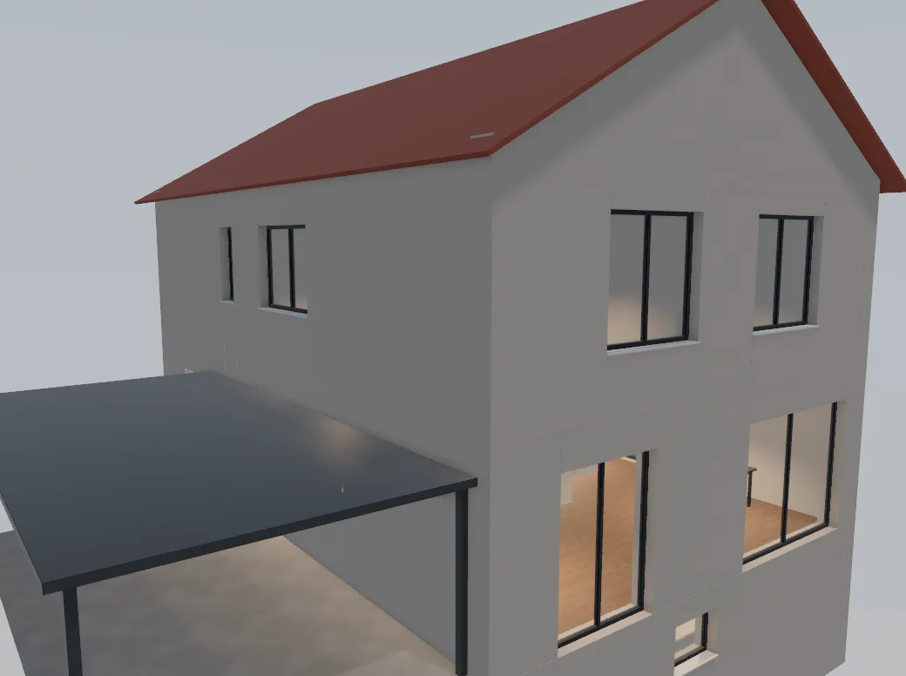
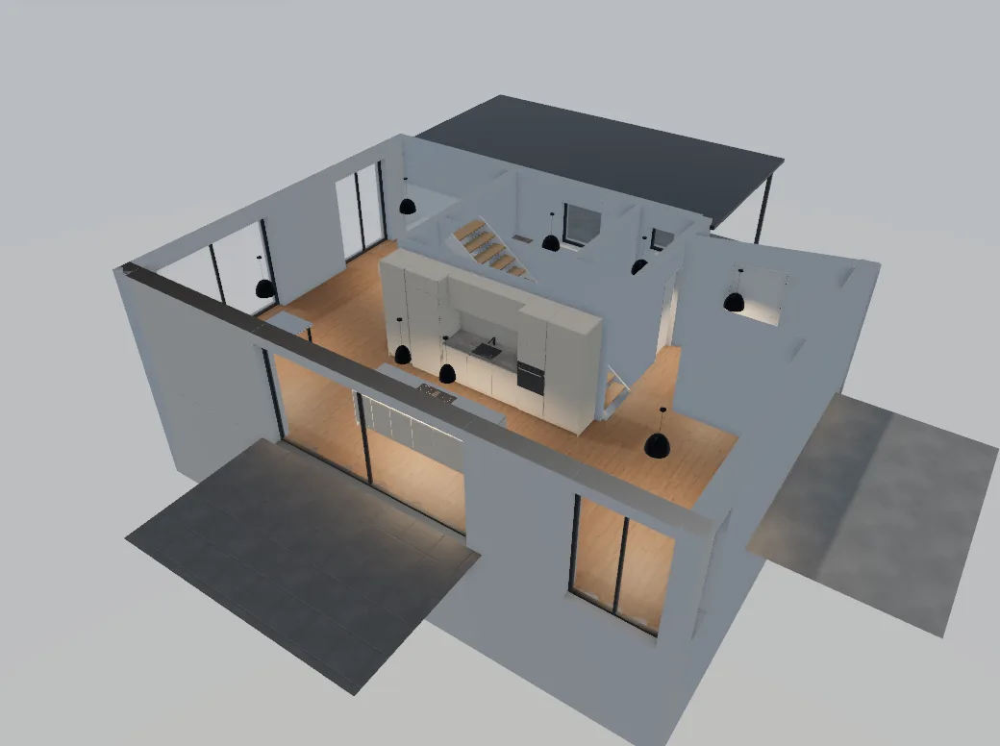
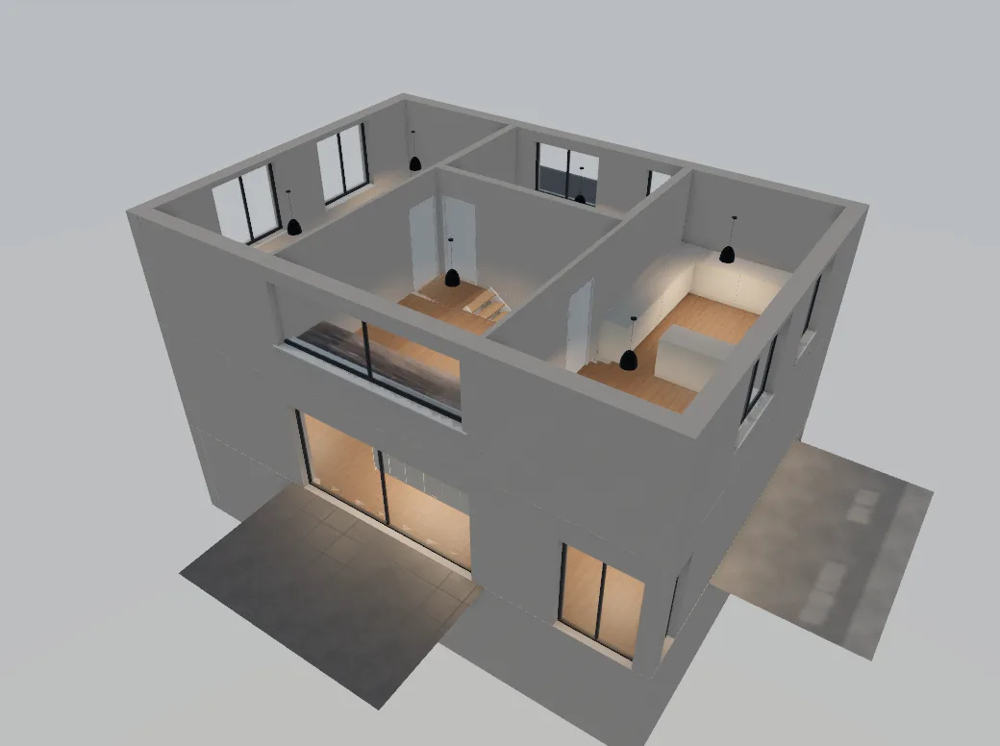
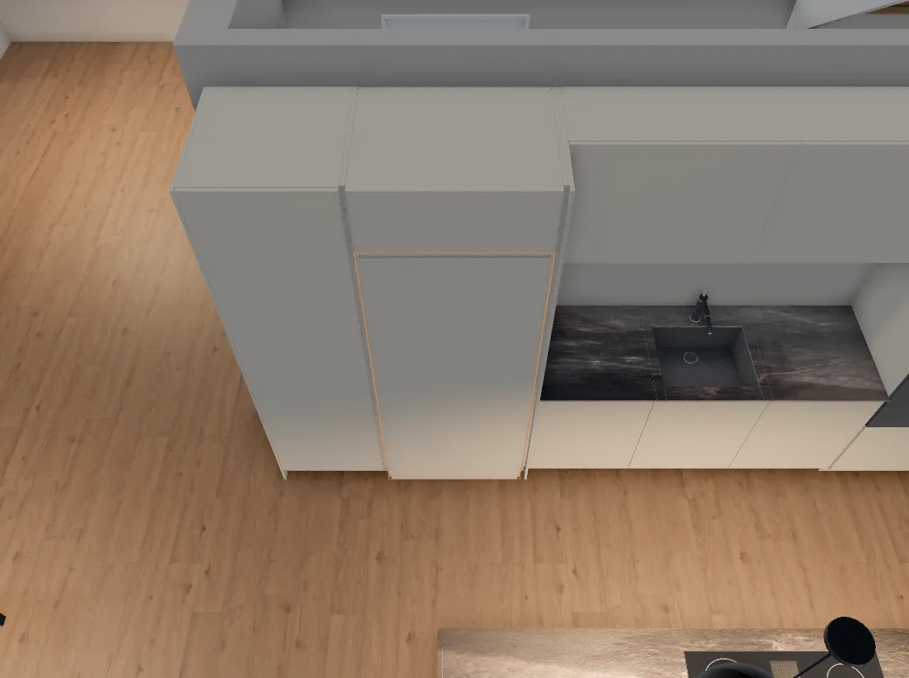
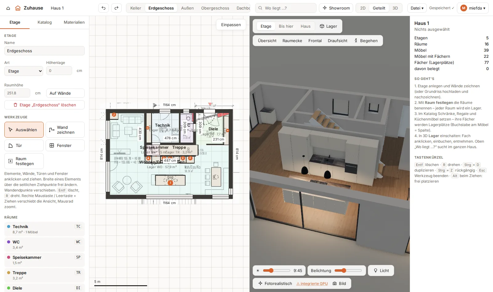
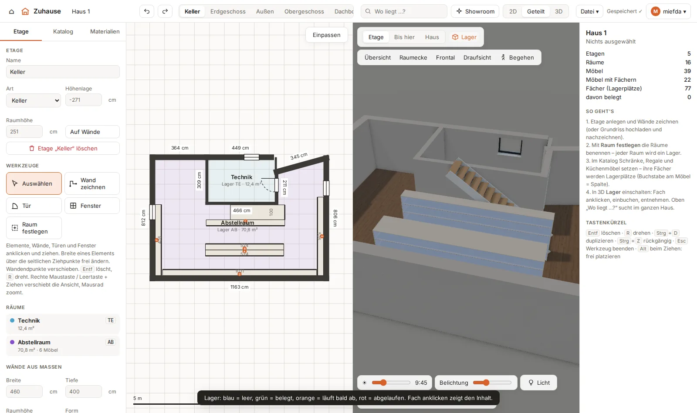
Alle Funktionen im Detail
Was Zuhause sonst noch kann – vom Grundriss bis zur Datensicherung.
Hausplaner
- Etagen: Keller, Wohnetagen, Dachgeschoss mit Satteldach und Kniestock, Außenbereich – mit Höhenlage und Raumhöhe
- Wände mit Fang und Maßen oder Grundriss-Scan als Vorlage mit Maßstab; die Etage darunter als Durchpause
- Räume per Klick erkennen – folgen beim Verschieben der Wände; eigener Bodenbelag
- Türen, Fenster, Treppen mit Treppenloch, Durchgänge in Schrankoptik, Terrasse, Stellplatz, Carport
- Objekte sperren (Taste
L), Rückgängig/Wiederholen, automatisches Speichern mit Konfliktschutz
3D und Möbel
- Möbelkatalog: Küchenschränke, Regale, Schwerlastregal, Vorrats- und Kleiderschrank, Sideboard, Kommode, Werkbank
- 3D-Bibliothek: über 500 Modelle von Poly Haven (CC0) und Tausende von FurniMesh, auch deutsch durchsuchbar; eigene
.glb - Ansicht Etage, „Bis hier“ oder ganzes Haus; gewähltes Möbel hervorgehoben, Rest durchsichtig
- Fotorealistisch per GPU-Pathtracing, Tageslicht nach Uhrzeit, Lichtregler, Bild speichern
- Begehen wie im Spiel: Wände bremsen, Schwellen werden überstiegen, Treppen führen in andere Etagen
Lager im Plan
- Raum = Lager, Möbel = Spalte, Fach = Lagerplatz (
KU-B2) – automatisch aus der Frontaufteilung - Einbuchen, entnehmen, umlagern, jede Buchung mit Rückgängig und Verlauf je Gegenstand
- Behälter: Kiste in der Werkzeugkiste – wird sie umgelagert, wandert der Inhalt mit
- Gegenstände mit Foto, Vorschläge beim Einbuchen, mehrere Lager (Garage, Keller …)
- Auswertung und Heatmap im Haus: Füllstand, Bewegung (90 Tage), lange unberührt
Scannen und Etiketten
- Kamera-Scan: Fach-Code, dann Gegenstand = einbuchen; Gegenstand zweimal = ausbuchen
- Unbekanntes, vorgedrucktes Etikett = neuer Gegenstand; Behälter befüllen per Scan
- Auch Handscanner und Eingabe von Hand; QR-Links öffnen direkt Fach oder Gegenstand
- Etiketten für Fächer (nach Etage/Raum/Möbel), Gegenstände und leere Vorrats-Etiketten
- 3D-gedruckte QR-Schilder als STL oder mehrfarbiges 3MF, auf Druckplatten verteilt
Einkauf und Haltbarkeit
- Verbrauchsmaterial landet beim Ausbuchen automatisch auf der Einkaufsliste
- Abhaken, gekauft und gleich wieder einbuchen, freie Einträge („Milch“)
- Teilen per WhatsApp, Teilen-Menü, Kopieren oder als Text; Preisrecherche für den Wohnort
- Haltbarkeitsdatum mit Schnellwahl (1 Woche … 1 Jahr), Warnungen vor und nach Ablauf
- Liste „Läuft bald ab“: abgelaufen, 7 Tage, 30 Tage, 3 Monate, 1 Jahr
Personen und Rechte
- Anmeldung per Kachel + PIN/Passwort oder E-Mail; Ersteinrichtung direkt in der App
- Rollen, Archiv, Personen zusammenführen, Registrierung mit Freigabe
- Recht „Haus planen“ pro Person – auch der Server prüft es
- Einstellungen pro Person: Startseite, Haus in 2D oder 3D, hell/dunkel, Schriftgröße
Handy und Offline
- Als App installierbar mit Schnellzugriffen (Scannen, Einbuchen, Suchen, Einkauf, Haus)
- Navigation unten, Scannen in der Mitte, Fächer als Blatt von unten
- Schlechtes WLAN: Buchungen werden vorgemerkt („2 Buchungen warten“) und nachgebucht – nie doppelt
- Scannen von Fächern und Gegenständen klappt auch ohne Netz
KI-Assistent und MCP
- Assistent per Text, Sprache oder Foto: „3 Dosen Tomaten in den Keller, haltbar bis 05/2027“
- Kennt Fächer beim Namen („Küche Kühlschrank oben“), liest QR-Etiketten auf Fotos, liest Antworten vor
- Bucht selbst mit Rückgängig, fragt ab 4 Buchungen nach; jeder OpenAI-kompatible Anbieter
- MCP-Server: Claude und andere suchen, buchen und lesen die Einkaufsliste – mit API-Schlüssel, lesend oder schreibend
Betrieb und Daten
- Ein Prozess, eine SQLite-Datei – Docker oder Node.js, auch auf NAS oder Raspberry Pi
- Automatische Backups, anlegen, herunterladen, hochladen und wiederherstellen per Klick
- Export/Import als Excel oder CSV mit Vorschau
- REST-API und API-Schlüssel für eigene Erweiterungen; HTTPS direkt oder per Reverse Proxy
Installation
Ein Node-Prozess, eine SQLite-Datei. Läuft auf dem NAS, einem Raspberry Pi oder dem Heimserver.
git clone https://github.com/mupf-dev/Homemgmt.git
cd Homemgmt
docker compose up -d --build
# App: http://localhost:3000 · MCP: Port 3100# benötigt Node.js ≥ 22.18
git clone https://github.com/mupf-dev/Homemgmt.git
cd Homemgmt
npm install
npm run build && npm start
# → http://localhost:3000npm install
npm run dev # Vite-HMR → http://localhost:3000
npm test # API-Tests
npm run typecheck
npm run test:e2e # Klicktest im Browsernpm run cert (App dann unter Port 3443), dauerhaft ein Reverse Proxy mit TRUST_PROXY=1.- ErsteinrichtungBeim ersten Start „Neue Person“ antippen und ein Passwort vergeben – diese Person wird Admin.
- Personen einladenUnter Verwaltung → Personen weitere Mitbewohner anlegen, optional mit dem Recht „Haus planen“.
- BackupsLaufen automatisch alle 24 Stunden, 14 werden behalten – einstellbar per Umgebungsvariable.
Anleitung
Die wichtigsten Abläufe in Kürze. Das vollständige Handbuch steht im Repository.
1 · Haus anlegen
Haus → Planen. Mit + Etagen anlegen, Wände zeichnen oder einen Grundriss hochladen und nachzeichnen.
2 · Räume festlegen
Raum festlegen und in eine umschlossene Fläche klicken. Name und Kürzel vergeben – fertig ist das Lager.
3 · Möbel stellen
Schränke aus dem Katalog docken an Wände an. R dreht, Alt platziert frei. Jedes Möbel bekommt einen Buchstaben.
4 · Einbuchen
Fach antippen, „Was kommt hinein?“ eintippen, Einbuchen. Am Handy geht's schneller per Scan.
5 · Etiketten kleben
Mehr → Etiketten & QR-Schilder: Fach-Etiketten drucken und anbringen, leere Etiketten für neue Dinge vorhalten.
6 · Wandterminal
Verwaltung → Wandterminals → anlegen, den Einrichtungslink am Tablet öffnen. Fertig.